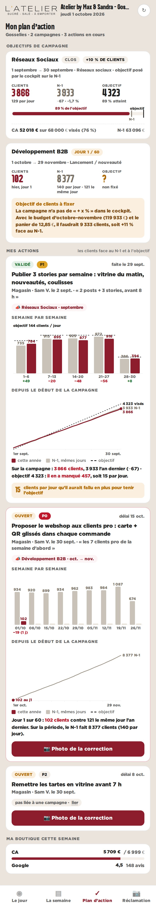
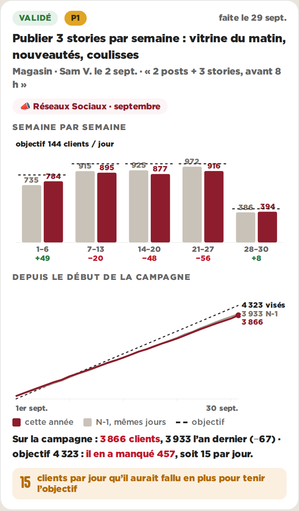

Le plan d’action au téléphone (390 px)

La campagne de septembre

L’action liée à la campagne
Pour
- Les deux questions ont leur réponse : « quelle semaine a décroché » et « où en est-on sur l’ensemble »
- Même palette, mêmes trois séries sur les deux graphiques : une seule légende
- Une campagne sans objectif (B2B, octobre) montre quand même ce qu’il y a à battre
Contre
- Une carte d’action fait un écran entier : deux graphiques, c’est le maximum
- À coder : le lien action ↔ campagne (campagne_id) et le « + x % » de la campagne d’octobre